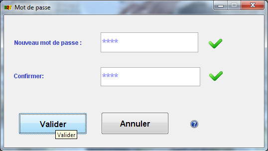

| |
CREER VOTRE MOT DE PASSE
Lorsque vous vous connectez pour la première fois au système vous deviez impérativement modifier votre mot de passe par defaut
qui vous a été attribué par l'administrateur système.
Ce mot de passe par defaut est 0000. vous deviez donc entrez votre
mot de passe dans le champ >>Nouveau mot de passe >> puis retapper le même mot de passe dans le champ >> Confirmer>>, puis
cliquer sur le bouton valider pour continuer.
Attention : tachez de donnez un mot de passe facile à retenir
car une fois le mot de passe enregistré dans le système vous ne pourez plus le modifier et seriez obligé de contacter votre
administrateur pour qu'ils resoud le problème.
Toute fois cette option sera possible dans la prochaine version de cette application.
|
 |